A native Windows video editor for short-form creators. Rust under the hood, AI on your machine, no cloud required.
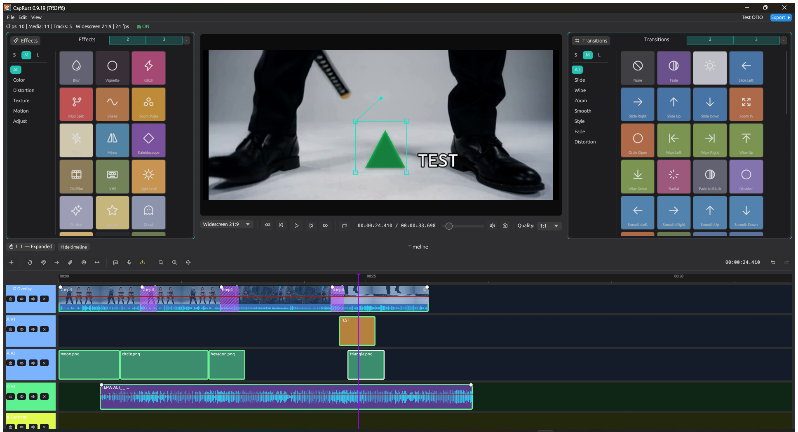
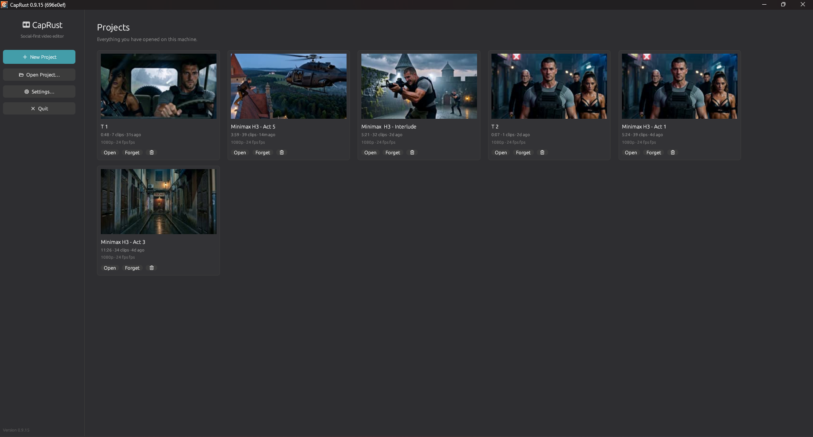
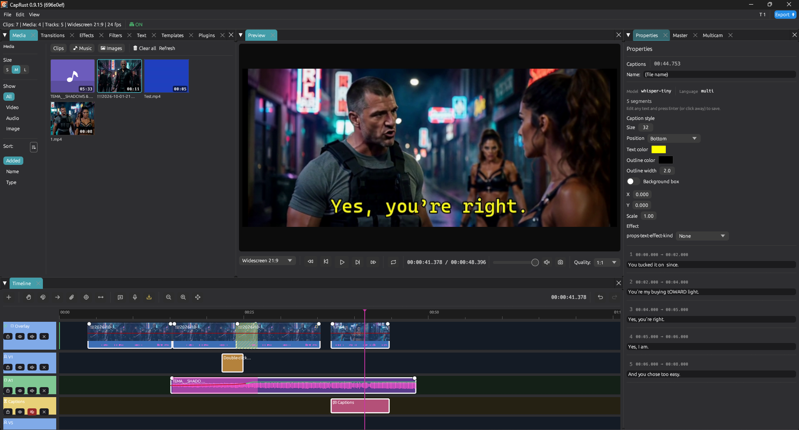
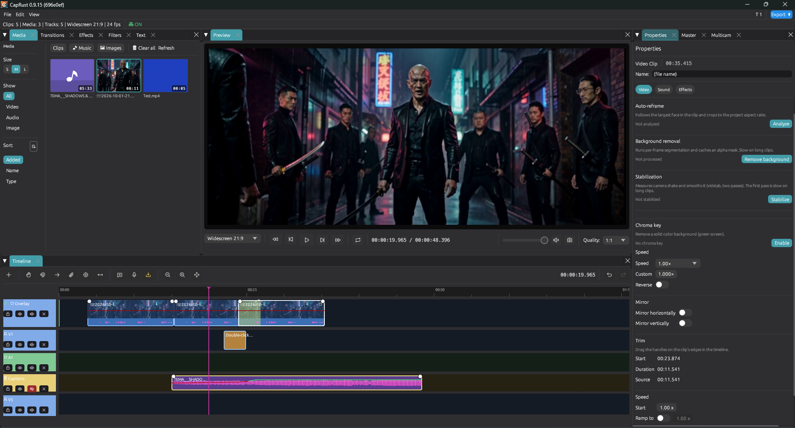
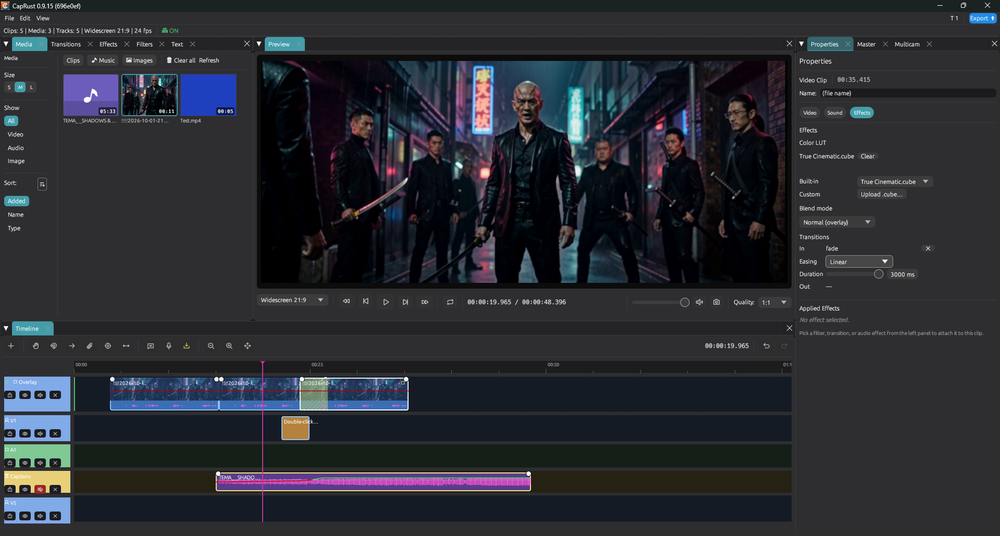
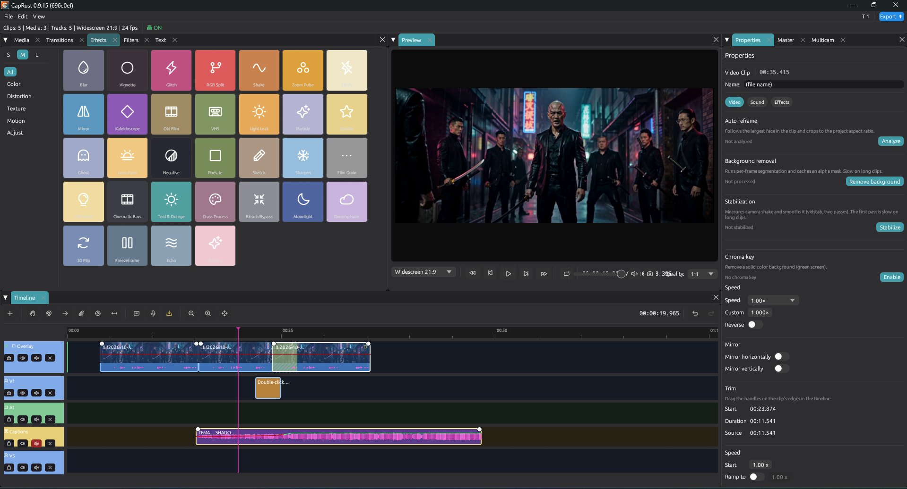
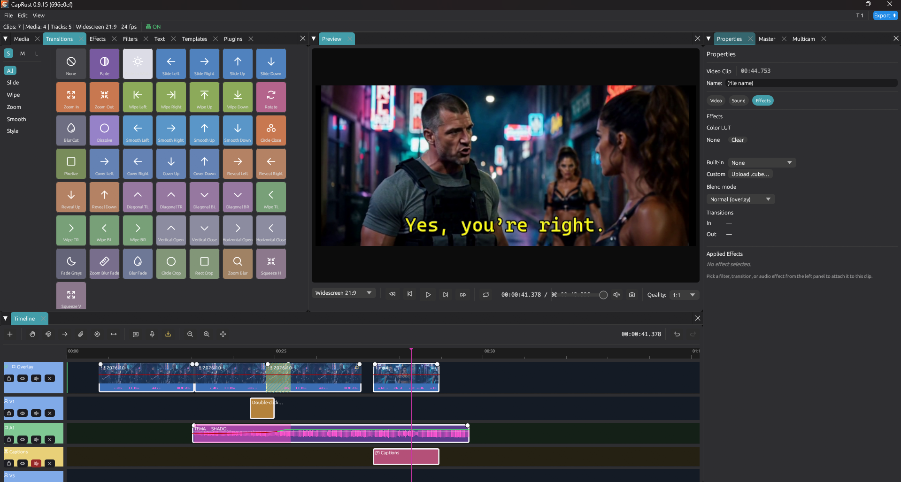
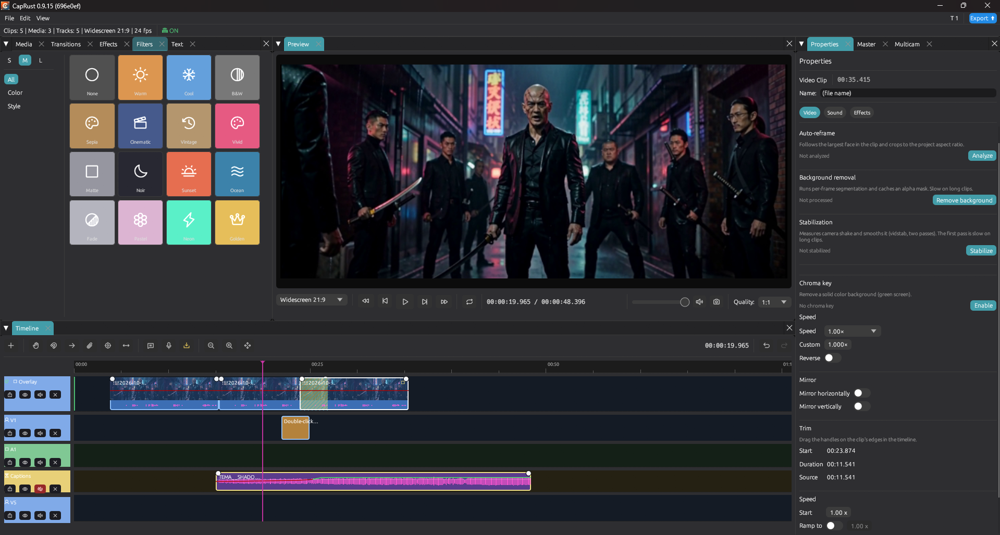
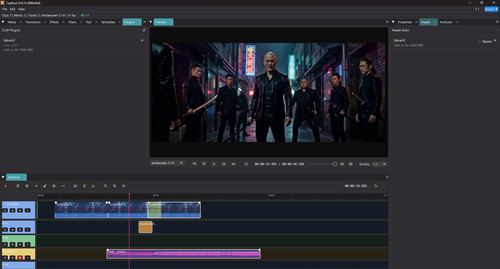
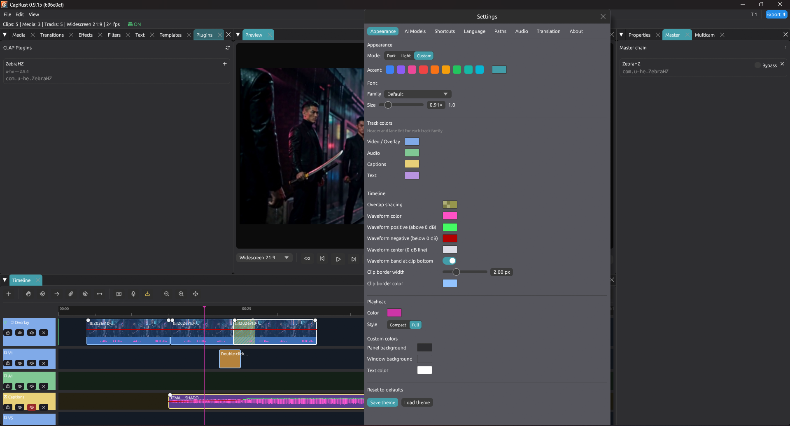
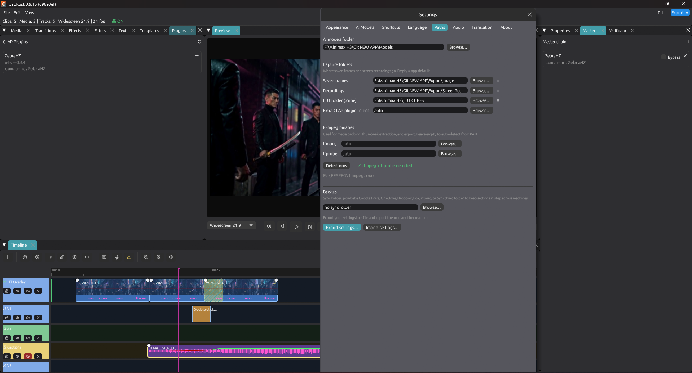
Everything you need for TikTok, Reels and Shorts — nothing you don't.
A single binary built with Rust and egui. Starts in under half a second, uses a fraction of the RAM of an Electron editor.
Whisper generates captions locally. Word-level timings drive a karaoke-style progressive reveal. No audio leaves your machine.
SCRFD face detection follows the speaker and keeps them centred when you switch from landscape to 9:16.
Ripple delete, snap, trim-follow playhead, multi-select drag, transitions with xfade. It just works.
Fade handles on the waveform, volume keyframes, auto-ducking against music, segmented speed ramps with synced audio.
Record a monitor straight into the media bin. Native DXGI Desktop Duplication, cursor overlay, no OBS or virtual device.
Group 2+ clips as camera angles, switch between them from a dock panel, and auto-sync the audio via envelope correlation.
NVENC and AMF on top of the CPU path. Probed at runtime; the export dialog offers only encoders that open on this machine.
Load your favourite CLAP plugins on the master bus. Verified with u-he ZebraHZ 2.9.4.
Drive the editor from Claude Desktop, Cursor, or your own phone through a Model Context Protocol server. 27 tools, undo-stack integrated. Off by default; one checkbox opens it to your local network.
Green screen in one click. Per-clip key colour, similarity, and edge blend. Preview and export share the same filtergraph.
108 bundled PNGs in 8 categories. Drag one onto the frame to place it, size it, turn it, or give it one of four animations. The preview draws them, so it is instant and does not depend on the preview quality.
A Trajectory tab for text and for stickers: mark where the thing is at which moment and it moves there. Move it on the frame and the keyframe under the playhead follows.
Point CapRust at a Drive, OneDrive or Dropbox folder and it keeps settings in step across machines.
CLAP plugins on the master bus, importers discovered from a JSON manifest, and a JSON-RPC bridge. Drop a plugin in a scan folder and it shows up, no reinstall.
Two editors, one project. Default is the dock — every panel is a tab you can drag anywhere. Modern is fixed — six zones, nothing to rearrange.
Media bin with or without the filter sidebar, and a Modern layout where each zone picks its panel from a dropdown instead of holding whatever was dragged there.
v0.9.23 brings the editor to the phone: the same Rust engine, running on Android, importing, previewing and rendering 9:16 video. On the desktop it auto-updates, remembers panel sizes, fixes the seam handles and the track fader in preview, and sniffs a file's type from its bytes when the name says nothing.
↓ Download v0.9.23 for WindowsSHA-256 for each release is on the release page.
All releases · Windows 10 1809+ · 64-bit · MIT license
ffmpeg.exe and
ffprobe.exe as subprocesses. On first run, if neither is
on your PATH, it offers to download a static
BtbN build (~110 MB) into %APPDATA%\CapRust\ffmpeg.
%APPDATA%\CapRust\models. The editor works without
them.
%APPDATA%\CapRust\crashes if anything goes wrong, and
the log is worth attaching to a
GitHub issue.